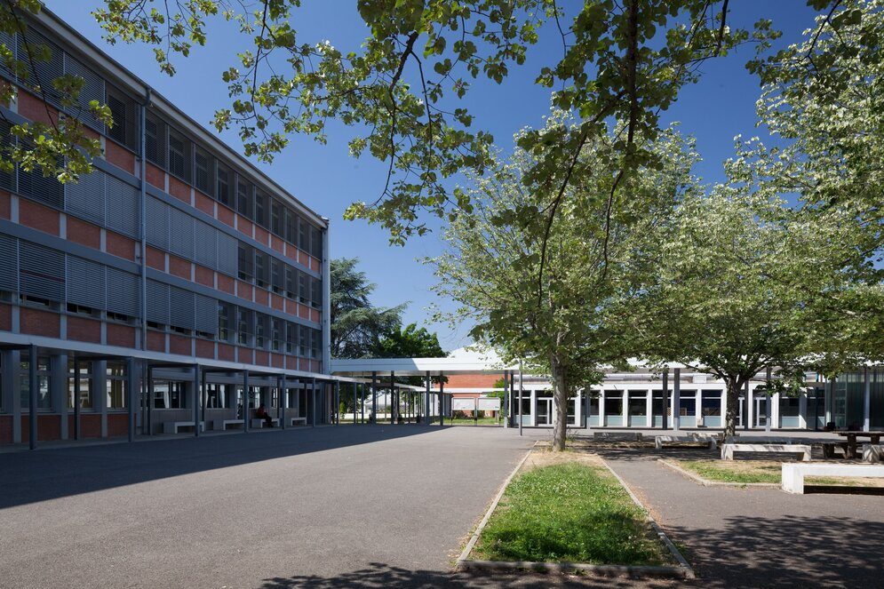

Baccalauréat et projet de spécialité

J'ai obtenu un bac STI2D. Mon projet de spécialité portait sur l'implantation d'une épicerie autonome. J'étais chargé de réaliser le contrôle de la température des produits ainsi que l'accès automatique au bâtiment.